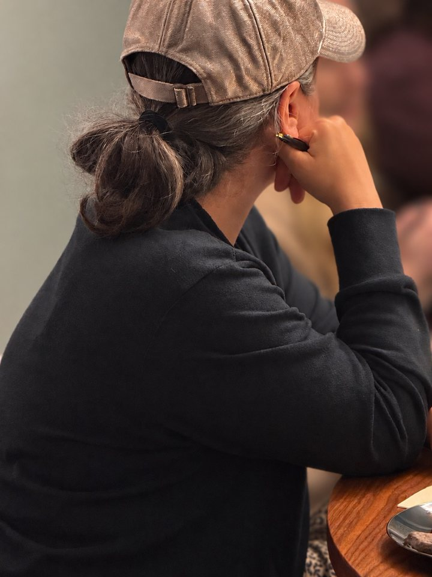
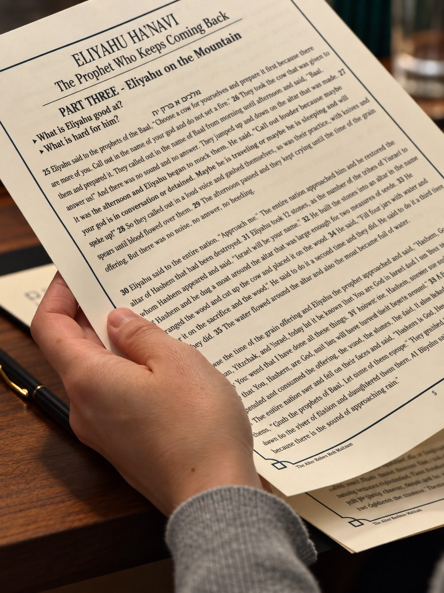

As high school Torah teachers, a lot of what we do every day is driven by the hope that our students will become lifelong learners. We spend years helping them develop the skills to open a Jewish text, read it closely, ask thoughtful questions, and discover how much there is to explore. We want them to feel comfortable navigating the texts of our tradition, confident enough to engage with them independently, and curious enough to keep coming back. Ultimately, we’re hoping to give them the access and fluency to make Torah learning a meaningful part of their lives long after they graduate.
And then one day, we sort of looked at each other and realized that we’re spending our careers giving our students the skills and confidence to learn Torah for the rest of their lives, but where exactly are they supposed to use those skills once they’re adults? Where are the opportunities for that kind of learning?
Meanwhile, we were starting to notice something else. The kind of Torah learning we were bringing into our high school classrooms every day was exactly what so many women in our community were looking for. Whenever we had the opportunity to teach a class for adults, the enthusiasm was unmistakable. People were genuinely excited to learn, to ask questions, to dig into the texts, and to have the kinds of conversations about Judaism, faith, and tradition that don’t always fit into everyday life. It seemed a shame that these opportunities were so few and far between, especially when we loved teaching them just as much as people loved showing up for them. We had something we wanted to share, and there were people who wanted to learn it. Surely there had to be a way to make that happen more than once in a while.
So we decided to create one.

Of course, there are already wonderful shiurim, lectures, and learning opportunities out there. We weren’t trying to reinvent Torah learning. What we wanted to create was a space for a particular kind of learning, the kind we get to experience in our classrooms every day: sitting down with a text and really getting into it. Reading carefully, noticing something unexpected, wrestling with an interpretation, or asking a question that takes the whole conversation in a new direction. Learning where you’re not just listening to someone else’s ideas, but discovering what you think, what you notice, and what you have to contribute to the conversation.
We wanted more opportunities for women to have that experience, whether they grew up with years of Jewish education, haven’t opened a sefer in decades, or are discovering the world of Jewish texts for the first time. After all, the whole point of lifelong learning is that there should be opportunities to begin, return, and continue at every stage of life.
The challenge, of course, is that adult life is full. Between work, families, responsibilities, and everything else that fills our days, even things we genuinely want to do can be surprisingly difficult to fit in. We started wondering what would happen if we built a beit midrash around the lives women actually lead, rather than expecting women to rearrange their lives around a beit midrash.
We had a few priorities.
First, the learning had to be excellent. We wanted to bring the same thoughtfulness, preparation, and high expectations that we bring to our high school classrooms every day, with carefully chosen sources, engaging teaching, and conversations that take the people in the room and their ideas seriously. Just as we do with our students, we wanted to create a space where people could bring different backgrounds, perspectives, and levels of experience to the table, feel comfortable asking questions, and know that their contributions were a valuable part of the learning.
We also wanted it to be manageable. This is how we got to fifty minutes on a weeknight, with enough time to really get into something interesting and still be home by nine.
And we wanted it to be a pleasure to come. There’s something special about arriving somewhere after a long day and finding that someone has thought about the experience of being there. A warm room, a beautifully prepared table, good food, interesting people, and the chance to spend fifty minutes thinking about something entirely different from the demands of the day. We wanted the whole experience to reflect how much we value the learning taking place.
So we started with a dining room table in Riverdale, some source sheets, and an invitation to come learn.

One of the most surprising and rewarding parts of bringing The After Hours Beit Midrash to life has been seeing just how much the women who came were willing to bring to the table. We knew there was an appetite for this kind of learning, but we weren’t quite prepared for the enthusiasm, thoughtfulness, and openness with which everyone showed up. Women came ready to think deeply, ask honest questions, share their perspectives, and really invest themselves in the learning. The conversations went in directions we never could have planned, and the different experiences and insights around the table brought so much more to the texts than either of us could have brought on our own. There was plenty of laughter, too, and a warm sense of connection that grew naturally out of learning together. We had set out to create a space where women could engage seriously with Torah, but watching what happened when they actually did exceeded anything we had imagined.
It’s exactly the kind of learning we spend our days hoping our students will carry into adulthood, and it’s been wonderful to create a space for women to experience it right now.
We’re still at the beginning, and we have so many ideas about what this Beit Midrash can become. More cohorts, more wonderful teachers, more opportunities to explore Jewish texts, and more ways to make serious Torah learning accessible and enjoyable for women with full adult lives.
At the heart of it all is something we believe deeply as educators: Torah learning isn’t meant to end when formal education does. And it certainly shouldn’t be limited to those who had the opportunity to study it when they were younger.
We want The After Hours Beit Midrash to be a place where women can keep learning, start learning, return to learning, and discover just how much there is to love about it.
We’re so happy you found us, and we’d love to have you join us.
There’s a place for you at this table.
Racheli & ShuliFounders, The After Hours Beit Midrash